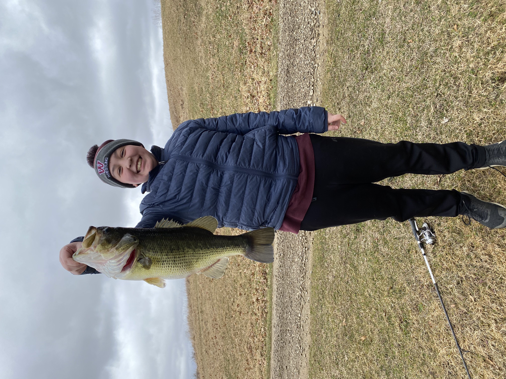
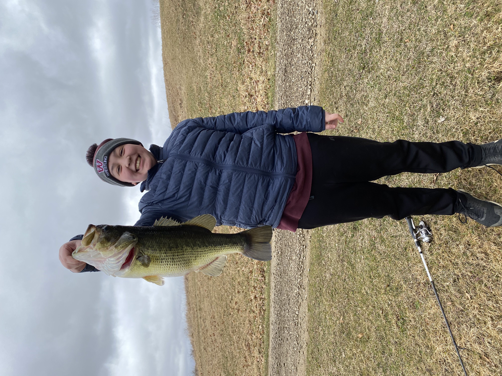

Introduction Page
Hello, my name is Maximus Brian Nye, the son of Lisa Dobbins-Nye and the grandson of Martha and Dick Dobbins.
I have two amazing dogs named Milo and Archie, both golden(but not colored golden) doodles, and an indoor-outdoor cat, Scout.
I was born on June 25, 2006, in North Adams, Massachusetts, and then moved to Concord, Michigan at 2 weeks old.
I attended Bean Elementary and have been with the Western School District since then.
I consider myself a hobbyist with a large imagination that keeps growing.
School has been a significant aspect of my life, as I derive immense pleasure and fulfillment from learning.
I've cultivated a deep passion for STEM subjects, particularly math and science, which led me to enroll in challenging courses such as AP Calculus, AP Physics, and AP Computer Science.
However, it's often assumed that students who excel in math may struggle with English.
Surprisingly, English was the subject where I faced a setback, resulting in the loss of my 4.0 GPA, courtesy of Mr. Kim.
Nevertheless, I've made significant academic progress over the years, honing my writing skills under the guidance of Mrs. Messer in AP Lang.

Outside of school, I am involved in various athletics and clubs, ranging from Football and Track to Yearbook and Student Council.
On the weekends, I work at Walmart as a cashier, which brings both interesting and headache-inducing experiences.
These adventures have etched enduring memories in my mind.
From the exhilaration of playing through the entire district football game against Lakeshore to the pride of contributing
to the creation of the greatest yearbook ever produced in Western history, each moment has left an indelible mark on my journey.
After completing my undergraduate studies, I have set my sights on obtaining a master's degree in Aerospace Engineering and Business from either the University of Michigan or Western Michigan.
I am passionate about exploring the intersection of engineering and business, and I believe that this program will provide me with the necessary skills and knowledge to excel in both fields.
During my time in the program, I am determined to secure internships with renowned companies and organizations such as NASA, SpaceX, and Lockheed Martin.
Ultimately, I want to secure a permanent position in a company at the forefront of innovation in the aerospace industry.
 

In my senior portfolio, I have created a dynamic homepage that includes a picture slideshow and an inspirational quote by the greatest ever.
As you navigate further, you will find my introduction, where I share glimpses of my personality and aspirations.
Next, I have designed my career pathway, which outlines my academic goals and future profession, using coding skills.
You can then explore my portfolio, which showcases 20 benchmarks highlighting my academic journey's growth and achievements.
Additionally, there are letters of recommendation and testimonials from mentors attesting to my capabilities.
Finally, you can find my resume, which provides a brief overview of my skills and experiences, accompanied by visually captivating word art.
I have meticulously crafted every element of this portfolio to demonstrate my proficiency in coding and design.